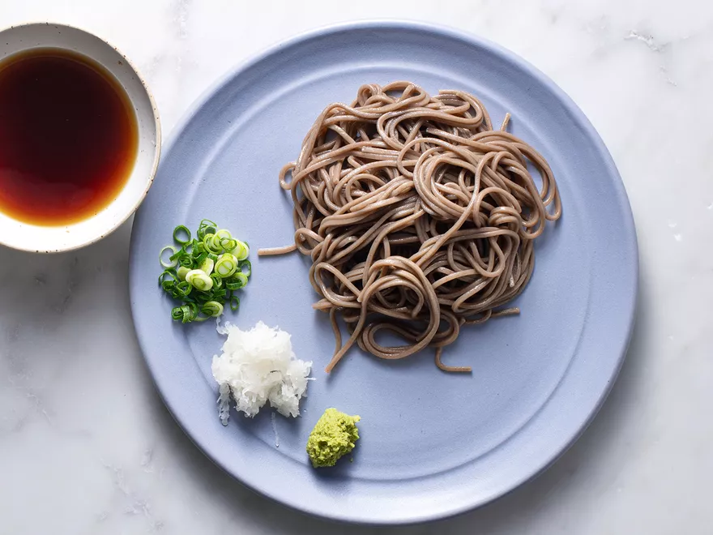

Soba

Description
Buckwheat noodles, or soba, are a staple in japanese cuisine.
Chewy with a grainy texture, buckwheat noodles are eaten hot, cold, or at room
temperature.
Ingredients
For the Dipping Sauce:
- 1 1/2 dashi
- 1/2 cup light soy sauce
- 1/2 cup mirin
- 1/4 teaspoon sugar
For the Noodles:
- 1 teaspoon wasabi, or to taste
- 3 ounces peeled and finely grated daikon
- 2 trimmed and finely chopped green onions
- 8 ounces dried or fresh soba
- 1 large sheet nori, cut into thin strips
Steps
- Bring dashi, soy suace, mirin, and sugar to gentle boil over medium heat. Remove from heat and allow to cool
- Set out 4 serving plates. Divide equally among plates: dab of wasabi, grated daikon, and scallions
- Bring 2 quart pot of water to boil and add soba. Return water to boil and cook the noodles until tender but firm,
3 to 5 minutes. Have ready a large bowl with ice water. Use strainer to remove soba from pot. Place soba into ice
water and chill until noodles are cold. Drain noodles.
- Divide noodles evenly between the four plates, mounding the noodles. Pour dipping sauce into individual little bowls
to serve alongside noodles.
- To eat, stir some daikon, wasabi, and green onion into dipping sauce. Take some noodles with chopsticks and dip.